What it does
Blue light at night keeps you up. Luz takes it out of your screen once the sun goes down, and puts it back in the morning.
Follows the sun
Warm from sunset, daylight from sunrise, worked out for where you are every day of the year.
Knows where you are
From your time zone's city. No location prompt, and nothing goes over the network.
Bedtime mode
Warmer still before you sleep, and mornings that wait for your alarm, not a 5 a.m. dawn.
f.lux's colours
Daylight, Halogen, Incandescent, Candle, Ember: down to 1200 K, with slow or fast fades.
f.lux's shortcuts
Alt+End to pause, Alt+PgUp/PgDn to dim, with Shift for warmer and cooler.
Pause when it matters
An hour of true colour for a photo or a design, or off until sunrise.
Reading the sun
One look at the tray tells you where the day is. On Windows it's filled with the colour your screen is turning.

Nothing drawn on top
Luz doesn't lay a coloured window over your screen. It sets the screen's gamma ramp, the table your graphics card runs every colour through on its way out, with SetDeviceGammaRamp on Windows and CGSetDisplayTransferByTable on macOS. Screenshots and recordings keep their true colours.
A calibrated screen keeps its calibration: Luz tints the curve that's there and puts it back when you quit.
Windows normally stops ramps at about 3000 K. The installer lifts that limit the way f.lux does, so Candle and Ember work too.
Install
| Windows installer | Luz-Setup.exe |
| winget | winget install kidchenko.Luz |
| Chocolatey | choco install luz |
| macOS | Luz.dmg (Apple silicon and Intel) |
| Homebrew | brew install --cask kidchenko/tap/luz |
Windows 10 or later, or macOS 11 or later. It's under 1 MB and needs nothing else installed. Coming from f.lux? Quit it first, so the two don't take turns.